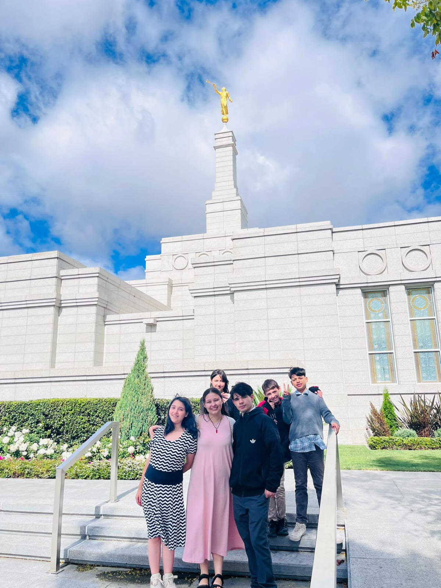

1. Haz tú lo justo. Raya el alba; luz y justicia de nuevo se ven. Ángeles toman, arriba, en cuenta todos los hechos; oh haz tú el bien. Haz tú lo justo por más que te cueste. Lucha sin tregua fielmente también, y con buen ánimo busca lo bueno. Dios te protegerá; haz tú el bien. 2. Haz tú lo justo. Caen los grillos; nuestras cadenas ya sueltas estén. Rotas por fe, cesarán de dañarnos. Vence la luz al mal; haz tú el bien. Haz tú lo justo por más que te cueste. Lucha sin tregua fielmente también, y con buen ánimo busca lo bueno. Dios te protegerá; haz tú el bien. 3. Haz tú lo justo, siempre sin miedo. Ama al Salvador; Él da sostén. Él da consuelo al triste que llora. Él te bendecirá; haz tú el bien. Haz tú lo justo por más que te cueste. Lucha sin tregua fielmente también, y con buen ánimo busca lo bueno. Dios te protegerá; haz tú el bien.
1. Fue Noé profeta, leal y sin temor. Dijo: “Arrepentíos”, mas nadie lo escuchó. Dios mandó un arca preparar que pudiera en aguas navegar. Noé fue obediente, diciéndose así: “Pronto lloverá, un arca construiré. Seguiré al Señor, Su palabra escucharé; todo así yo prepararé, en Su ley caminaré. Y al llover fuerte sobre mí, preparado estaré”. 2. Cual Noé yo puedo también en Dios confiar. Y tal como un arca, mi fe me ayudará. Puedo yo vivir con honradez. Puedo orar con fe y aprender. Y si tormentas hay, en mi arca paz tendré. Pronto lloverá, un arca construiré. Seguiré al profeta, la voz de Dios es él; todo así yo prepararé, en Su ley caminaré. Y al llover fuerte sobre mí, preparado estaré.